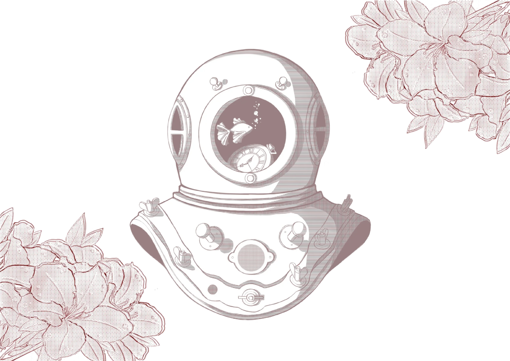

VISUAL COMMUNICATION / SELECTED WORKSSELECTED WORKS / 01—10
WORKS.
IN MOTION
平面設計、插畫與品牌設計。
記錄想法一步步轉化為視覺的過程。
グラフィックデザイン、イラストレーション、ブランディング。
アイデアがかたちになるまでの過程を紹介します。
ABOUT / 01
PROFILE.
GRAPHIC DESIGN
VISUAL COMMUNICATION
PRODUCT & CREATIVE PLANNING
梳理想法背後的脈絡，
轉化為清晰易懂的表達。
アイデアの背景を整理し、
伝わるかたちに整える。
我以平面設計為基礎，透過視覺與文字梳理概念，並將其延伸至品牌、商品與溝通設計。
グラフィックデザインを軸に、コンセプトを視覚と言葉で整理し、ブランドや商品、コミュニケーションの設計へつなげています。
除了製作視覺，也會思考「要傳達給誰、傳達什麼、如何傳達」，並將企劃的意圖轉化為具體表現。
見た目をつくるだけでなく、「誰に、何を、どう届けるか」を考え、企画の意図を具体的な表現へ落とし込むことを大切にしています。
希望運用至今累積的平面設計、插畫與品牌設計經驗，在日本從事設計製作、商品企劃等工作。未來也想參與 IP 商品企劃，以及從概念發想到商品化的一貫設計，並透過實務拓展表現的廣度。
これまで培ったグラフィックデザイン、イラストレーション、ブランディングの経験を活かし、日本でデザイン制作や商品企画などの仕事に携わりたいと考えています。今後はIPを活用した商品企画や、コンセプトから商品化まで一貫したデザインにも取り組み、実務を通じて表現の幅を広げていきたいです。